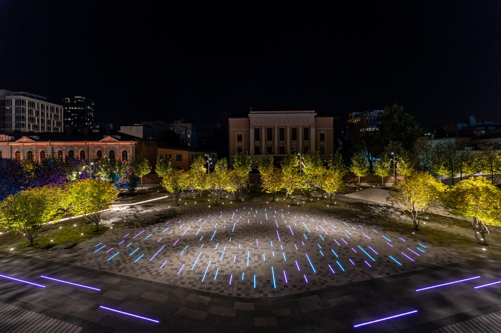
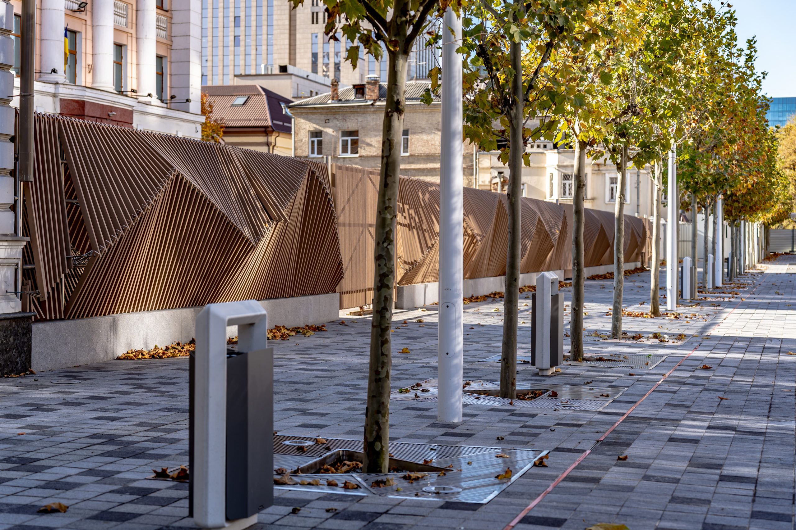
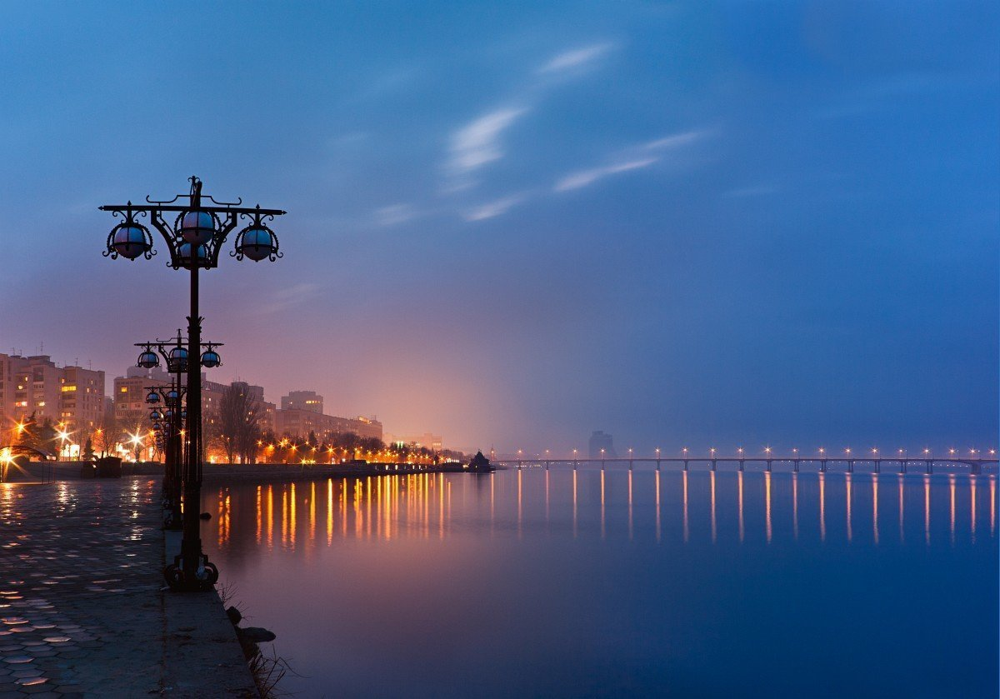
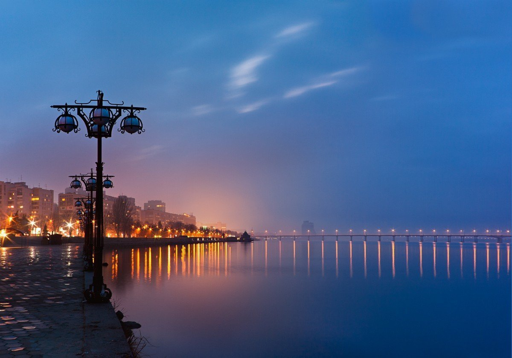

Успенська площа
В усі часи Успенська площа була важливим елементом пішохідно-середовищного каркасу міста і серцем громадських взаємодій. І зараз вона є не окремим локальним об’єктом, а частиною більш глобальної системи планувальних елементів в історичному центрі міста «Успенська площа — вул. Ливарна — набережна — парк ім. Шевченка».
Безліч містян, що проводять тут час, засвідчують: життя триває! на мапі
 
